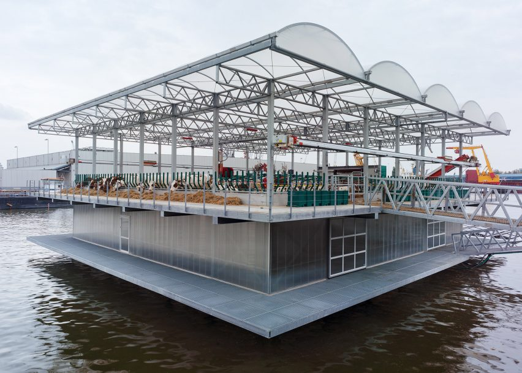

Recent Posts
Farm to Market Roads. A Backbone for Agriculture
Randa Ancheta
October 12, 2019
The Philippines is rich in land, so it’s only but usual to set up agricultural lands. In many cases though,
agricultural lands are very far from the markets or civilization in ...
Read More

Food Shortage is a Major Probel. Vertical Farming our Savior?
Randa Ancheta
October 11, 2019
To keep pace with population growth, food production in developing Asia and the Pacific will need to increase
mainly through improved land and labor ...
Read More

Will Floating Farms be Good Against Destructive Floods
Randa Ancheta
October 9, 2019
It is sad to say that calamities always hit the Philippines, and if these calamities bring super heavy rains
and gusts of wind, farmers tend to panic ...
Read More

Climate Change is Around the Corner. We Need to Change Now!
Randa Ancheta
September 24, 2019
Developing countries in Asia and the Pacific are likely to face the highest reductions in agricultural potential in
the world due to climate ...
Read More
Farm to Market Roads. A Backbone for Agriculture
Randa Ancheta October 12, 2019The Philippines is rich in land, so it’s only but usual to set up agricultural lands. In many cases though, agricultural lands are very far from the markets or civilization in ...
Read More
Food Shortage is a Major Probel. Vertical Farming our Savior?
Randa Ancheta October 11, 2019To keep pace with population growth, food production in developing Asia and the Pacific will need to increase mainly through improved land and labor ...
Read MoreWill Floating Farms be Good Against Destructive Floods
Randa Ancheta October 9, 2019It is sad to say that calamities always hit the Philippines, and if these calamities bring super heavy rains and gusts of wind, farmers tend to panic ...
Read More
Climate Change is Around the Corner. We Need to Change Now!
Randa Ancheta September 24, 2019Developing countries in Asia and the Pacific are likely to face the highest reductions in agricultural potential in the world due to climate ...
Read More